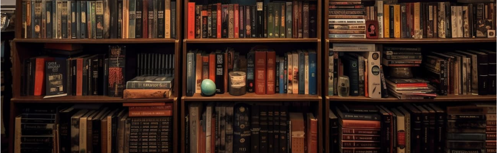

réussite
retrouve toutes les fiches pour ton examen
Nous te proposons des fiches de cours complet et gratuitement afin d'exceller pour ton écrit et ton oral du bac de francais
oeuvre
littérature d'idée
- Rabelais, Gargantua
- La Bruyère, Les Caractères, livres V à X
- Olympe de Gouges, Déclaration des droits de la femme et de la citoyenne
roman
- Abbé Prévost, Manon Lescaut
- Balzac, La Peau de chagrin
- Colette, Sido suivi de Les Vrilles de la vigne
théâtre
- Pierre Corneille, Le Menteur
- Alfred de Musset, On ne badine pas avec l’amour
- Nathalie Sarraute, Pour un oui ou pour un non
poésie
- Rimbaud, Cahier de Douai
- Ponge, La rage de l’expression
- Hélène Dorion, Mes forêts